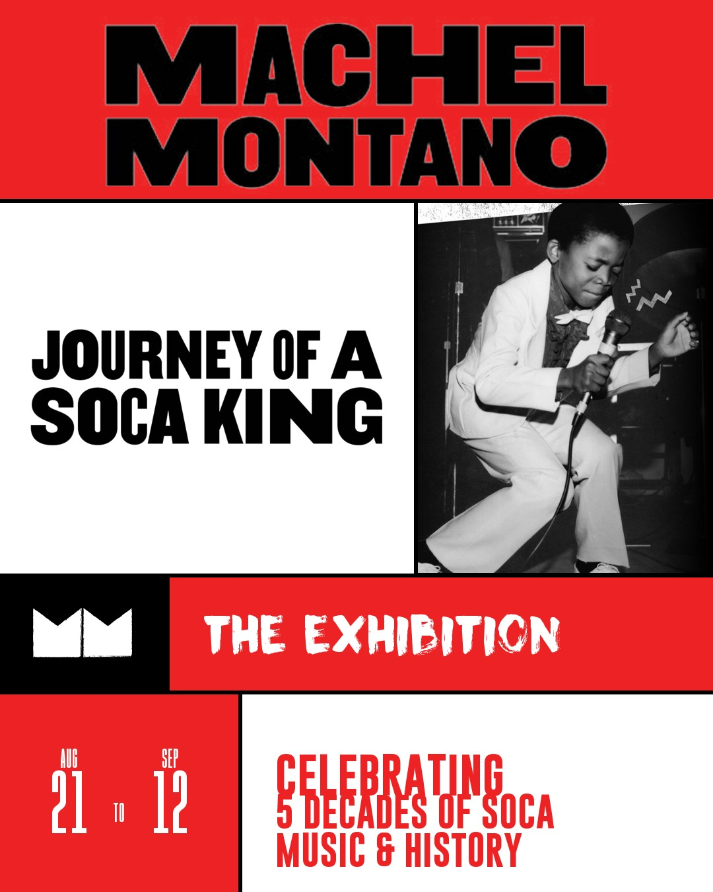

Journey of
a Soca King
The Exhibition

Machel Montano, the Trinidad and Tobago-born singer, songwriter, producer, and cultural icon widely known as the King of Soca, has spent five decades shaping the sound and global reach of Caribbean music. Performing since the age of seven, Montano has built a groundbreaking career through music, international performances, entrepreneurship, and cultural advocacy.
A record 12-time Trinidad and Tobago Road March champion, Montano is also a National Calypso Monarch, Chutney Soca Monarch, and recipient of the Hummingbird Gold National Medal. His career reflects the energy, creativity, and cultural traditions of Trinidad and Tobago while demonstrating the power of Soca to connect audiences across borders.
Journey of a Soca King: The Exhibition brings together objects from Montano's remarkable career, including performance costumes, trophies, and vinyl records. Visitors can listen to a selection of Montano's music at a vinyl listening station and watch highlights from key moments in his life and career.
The exhibition follows the release of the 2026 documentary Like Ah Boss: Journey of a Soca King, which centers on Montano's 16 performances during the 2015 Carnival season.
Brooklyn holds a special place in this story. Home to one of the largest Caribbean diasporas outside the Caribbean itself, Brooklyn has long been a vital center for Caribbean music, culture, and community. For Montano, the borough was an important part of his early career and his connection to audiences beyond Trinidad and Tobago.
Journey of a Soca King celebrates these connections between Trinidad and Tobago, Brooklyn, and the wider Caribbean diaspora, and the enduring cultural impact of one of Soca's most influential artists.
Stay in the loop
Join the mailing list for programme updates and announcements.